ALEXANDRA's little life: The Child of the Universe
by Christian Alexandra Rances
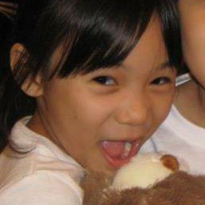
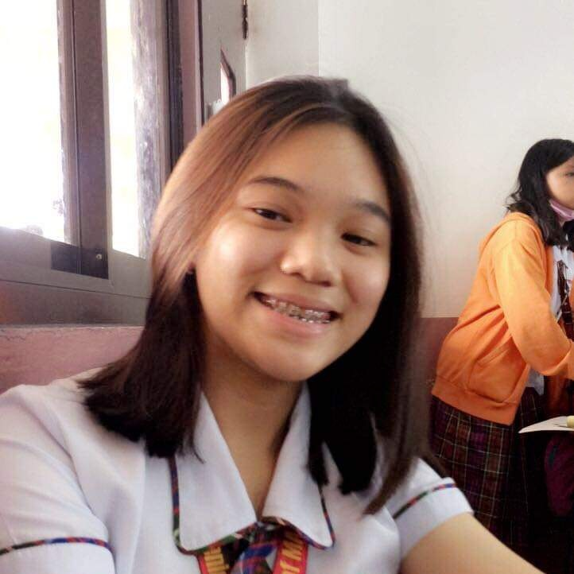
CHILDHOOD YEARS
Throughout these significant years, I have spent my entire childhood life in several places and points of life contributing to my present years up to my future state1. I was born in San Juan Metro Manila and born on June 19, 20032. I have three siblings and I am the youngest3. The Alexandra in her childhood years was childish and nonchalant about certain things in life, not knowing what lies ahead in retrospect4. Growing up, my siblings and our mother were separated due to financial problems and lived in a religious children welfare institution for about four or five years together with my older sister5. For years, I have spent my childhood participating in recreational activities like gardening and playing with other children during afternoons6. As I vaguely remember my childhood years, my older sister and I spent mornings greeting sisters or priests and actively participated in church by serving in masses7. I went to a catholic elementary school in Manila and was especially interested in subjects English and Araling Panlipunan8. I was also a fan of playing sports like Volleyball, Badminton, and a little bit of Basketball9. Developing also hobbies of dancing and a little bit of acting during class presentations10. Back then, my family, friends, and classmates called me by my nickname Mhi11. I used to be passionate about the future and always changed my future dream job depending on what I see from television series or movies: from being a nurse, to being part of an army, to becoming a pilot, or to be a great detective12. Since my mother and other siblings were not present at all times during my childhood, my sister and I took care of each other until present times13. Looking back to Alexandra’s childhood years, she was energetic at all times14. Greeting every person she encounters every day, always with a smile15. I remember when I was at the age of nine years old, a typical zestful child, I went swinging to extremity while looking up at the sky which caused my head to hit the cement tiled outdoor floor16. The nine-year old Alexandra began to laugh while crying due to headache from the swing accident17. Another accident that happened during my childhood years was when a nun from the institution instructed my sister and I to shred papers in their office as a pastime for us before lunch, the energetic and heedless Alexandra curiously had her hand in the shredder machine18. The misfortunes that occurred in my childhood years served as a guide for my teenage years to present that I should think twice about everything that I would think in doing19. During my childhood years, the bond that I have shared with my elementary to high school classmates have been irreplaceable and incomparable20. Alexandra’s childhood years were a glimpse from the past as a means of nurturing and enlightenment for Alexandra’s approaching adulthood21.
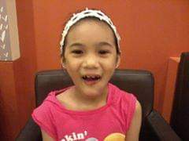
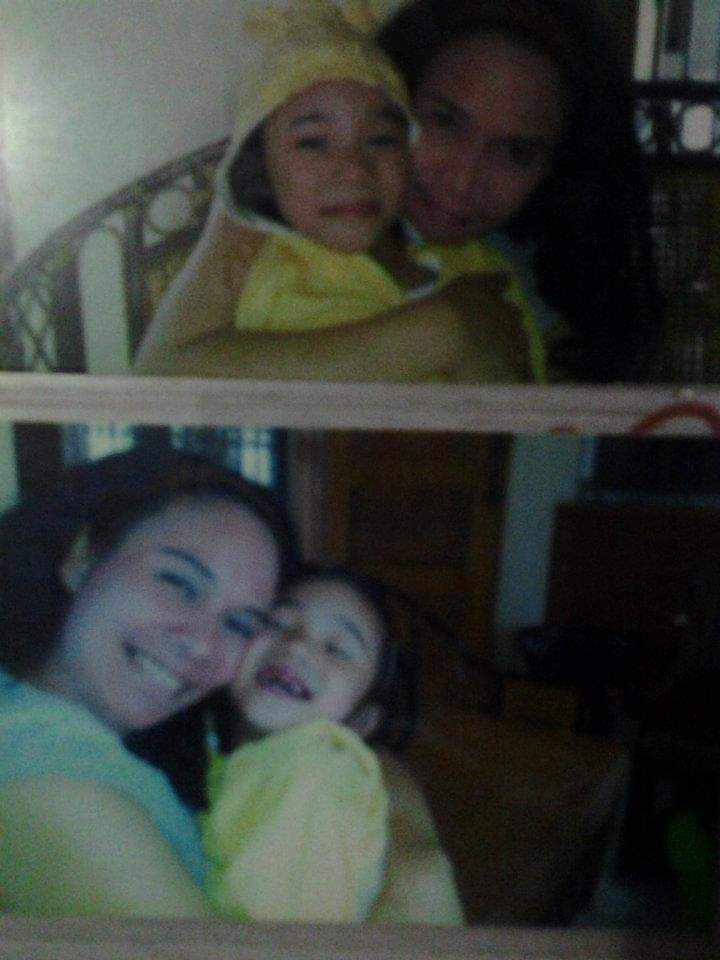
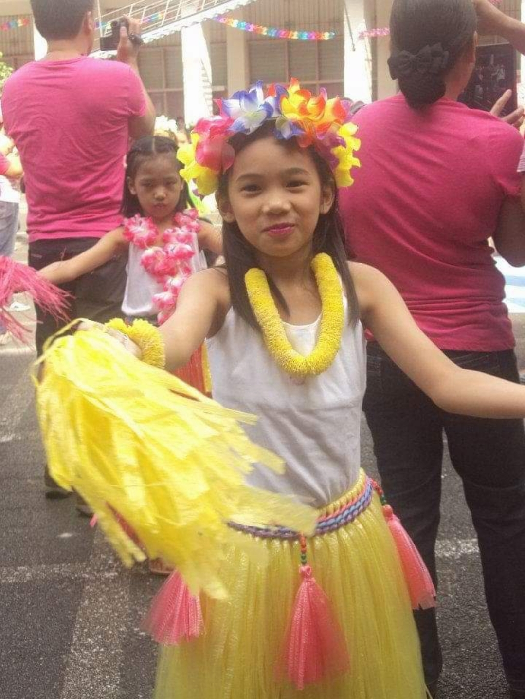
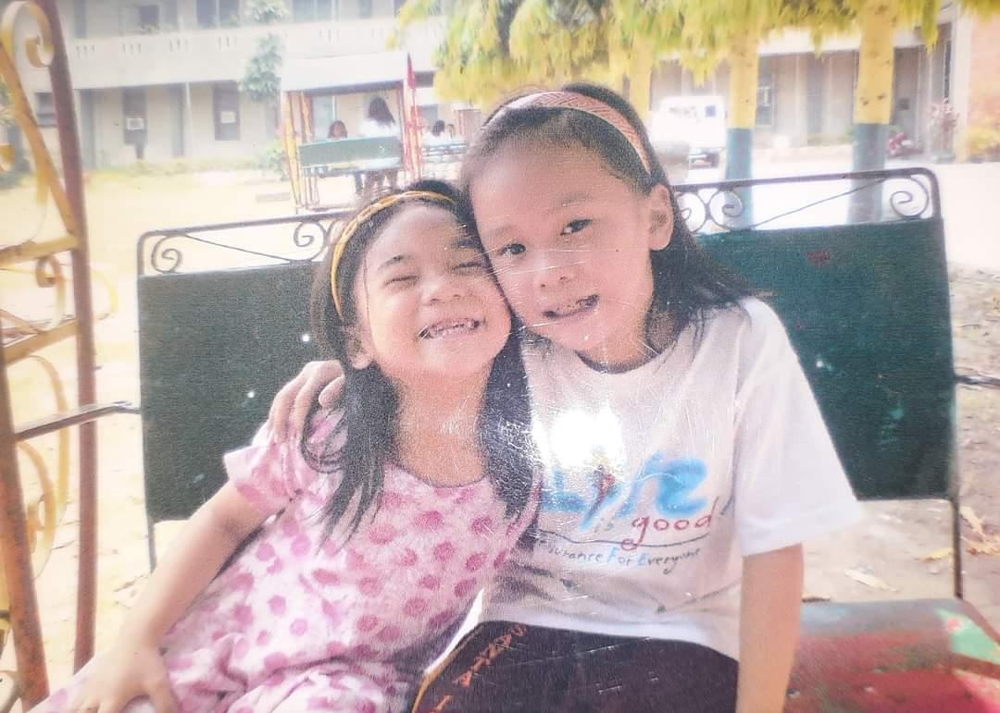
Go to Top
TEENAGE YEARS
As Alexandra’s teenage years were approaching, her attitudes and behaviors were also changing1. The energetic and passionate Alexandra in her childhood years was inconspicuous during these specific years, hidden away since shyness and nervousness in interacting with people first came up to her subconsciousness2. Teenage years for me were my junior high to senior high school years3. During these years, my mother, my sister and I got back together4. We would go on trips together for weeks5. Every weekend night, the three of us would always go on a movie night and eat out at our favorite restaurants after6. At school, my elementary friends were also my junior high friends so I became familiar with interacting with the same faces that I see daily during school days7. In my eighth to ninth grade, my mother decided to get a dog8. Since people at home were busy, I unconsciously took care of that dog to the point that it became my beloved pet9. My pet’s name was Patpat and he was a golden retriever labrador breed, always staying by my side through ups and downs10. Patpat became my best friend and also sometimes like a child11. Then my mother decided to adopt five more dogs, making our home like a shelter for dogs12. My last two years in junior high school were the best years of my high school life, attending proms and partying after in hotel rooms.13 As I approached the final year of junior high school, I was influenced by drinking with my friends and I thought it was a good thing since I was living in the moment back then14. After tenth grade, it was summer and I suffered from depression15. No one knew about it since I didn’t know back then that it was that thing16. My elementary to junior high school friends moved from different schools while I remained in the same school for senior high17. The depressing feeling of being familiar with certain people through years and suddenly not seeing them daily made me suffer from anxiety in approaching and making friends with my senior high classmates18. Eventually, I made new friends while I was content from the comfort of my pet when I went home after school19. Until my dog died during my grade eleven years, I didn’t know what to feel back then and the depressing feeling lingered on me as I approached the final year of senior high school20. Then, the pandemic happened21. I’ve met new faces again in my 12th grade22.I built romantic relationships but somehow didn’t feel content23. Alexandra’s teenage years were lethargically different from her childhood years, suffering from hidden emotions of sadness and at the same time the euphoric feeling was somehow still discernible24.
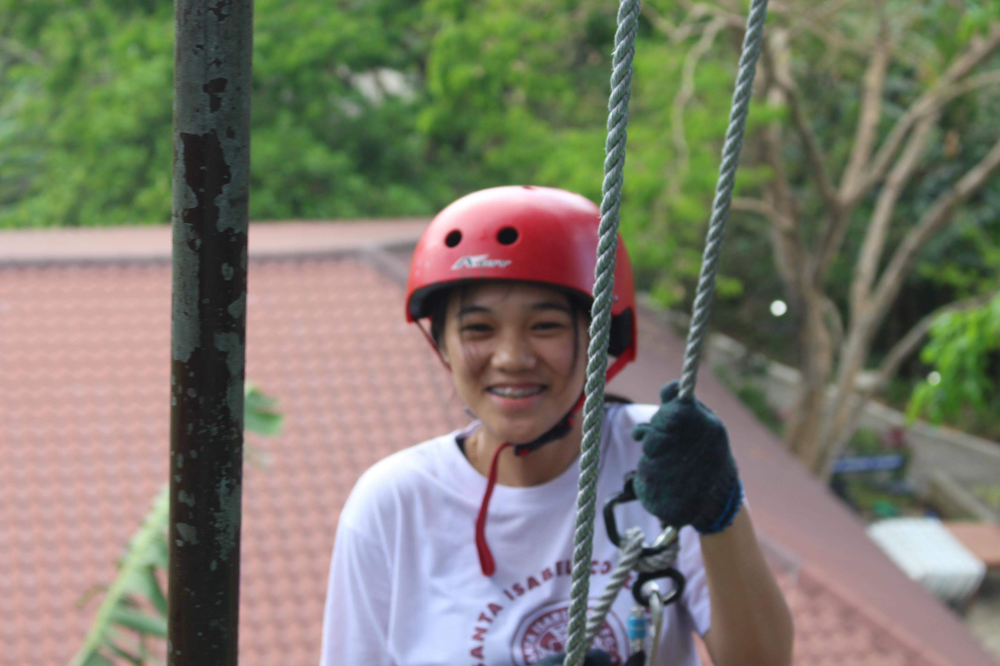
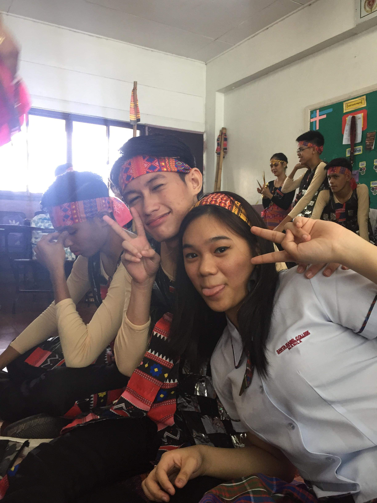
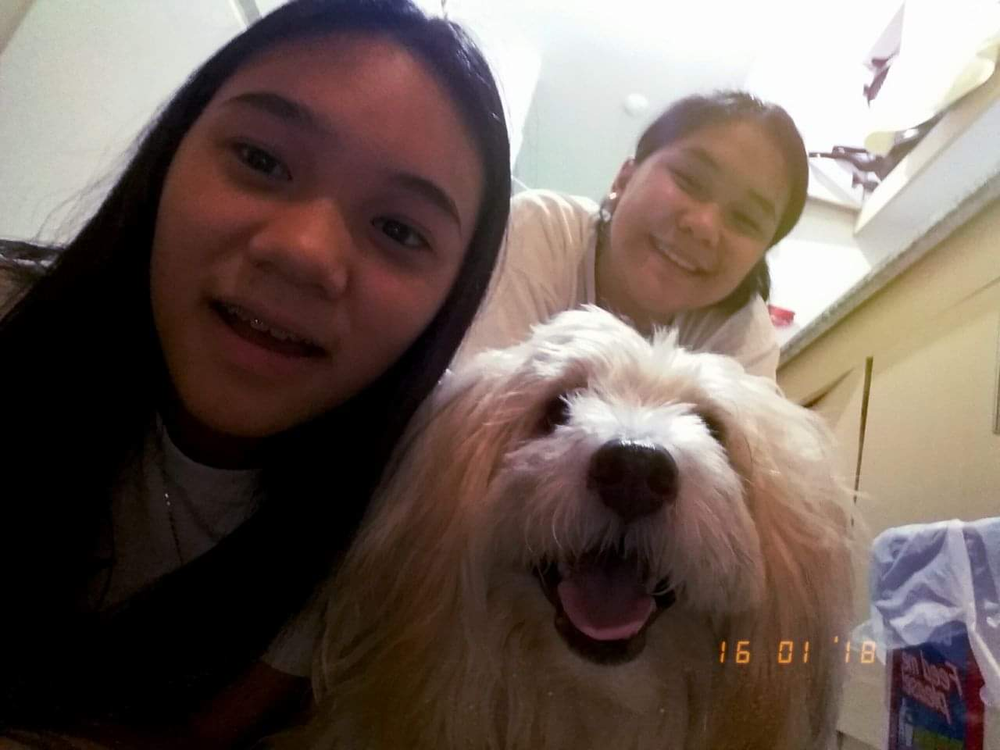
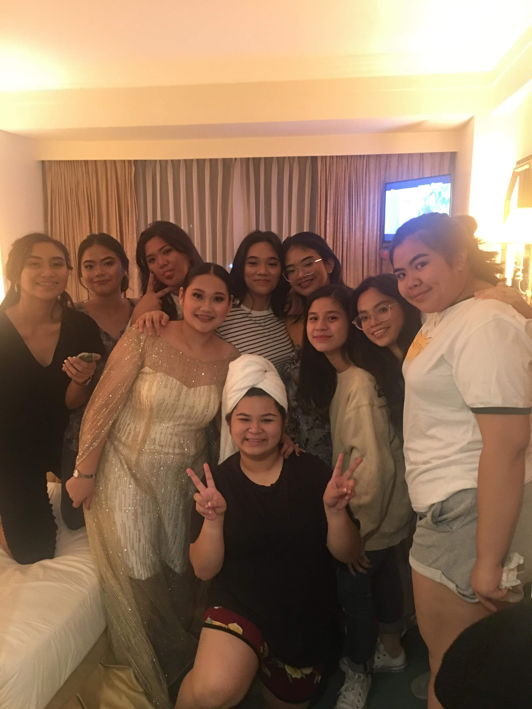
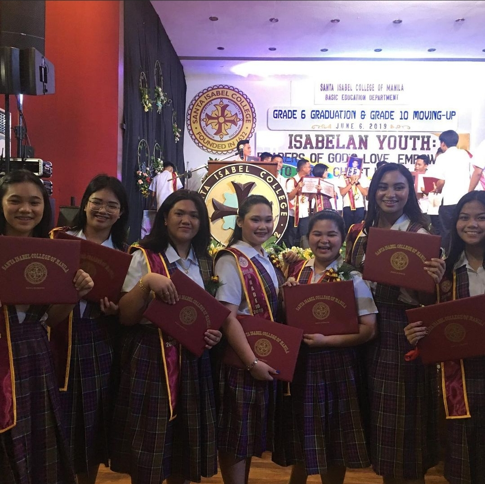
Go to Top
COLLEGE YEARS
Alexandra’s first year college experience happened in light of the pandemic, limited social interaction and being confined at home was the main source of entertainment1. The feeling of emptiness surrounded her still while continuing her studies2. Meeting new people has been one of the highlights of my ongoing college years3. Being in college, I thought it was just like being in senior high school4. Until I reached second year in college, the amount of school tasks would dominate over my personal problems5. At home, financial problems arise due to the repercussions brought by the pandemic6. Having a huge amount of responsibilities at home while wanting to perform well in college made my self destructible but at the same time made me strive for more7. The beliefs that I built during my childhood years collapsed as I struggled to overcome day-to-day challenges8. I no longer attend masses in church anymore since the pandemic happened9. My alcohol drinking habit engulfed my lifestyle10. My optimistic self during my childhood to teenage years was replaced by gloom11. Despite all the situations that I’ve encountered, my grades did not disappoint me12. As I entered college, I thought to myself that four years would fly fast and I would not submit to negative influences13. Now that I’m in second year, currently studying in the second semester of the school year, face-to-face or hybrid classes were implemented14. Since then, I started to restore faith in myself and began to start attending masses in St. Jude every Thursday and Quiapo church every Friday again15. However, influences would consume my system again16. My high school friends supported me all the way, even though they also have their own personal challenges 17. Attempting to build courage and optimism in my college years brought me to certain realizations in life that would contribute to becoming my best self again and in my future endeavors18. The Alexandra in her college years may suffer from her personal difficulties in life, but she continues to strive and thrive19. I would always think to myself that there’s always something good coming and that I should keep going to achieve in becoming my better self20.

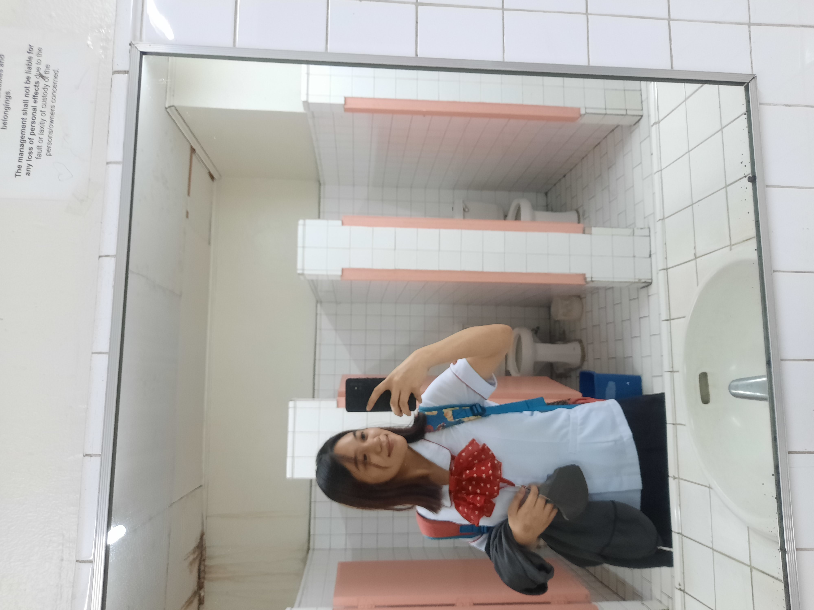
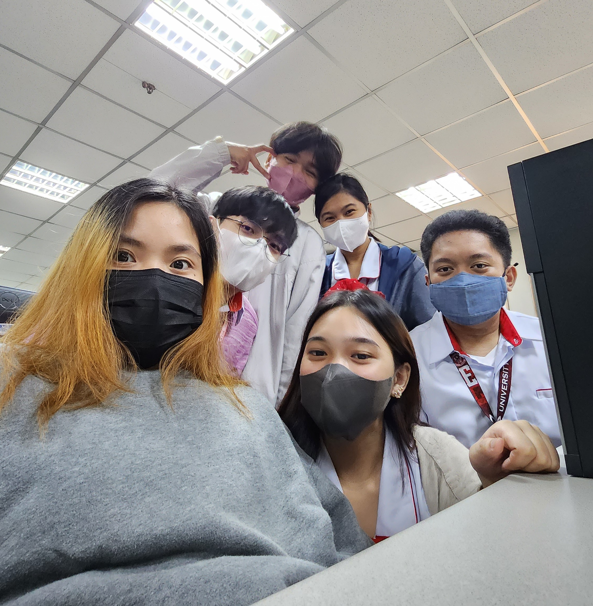
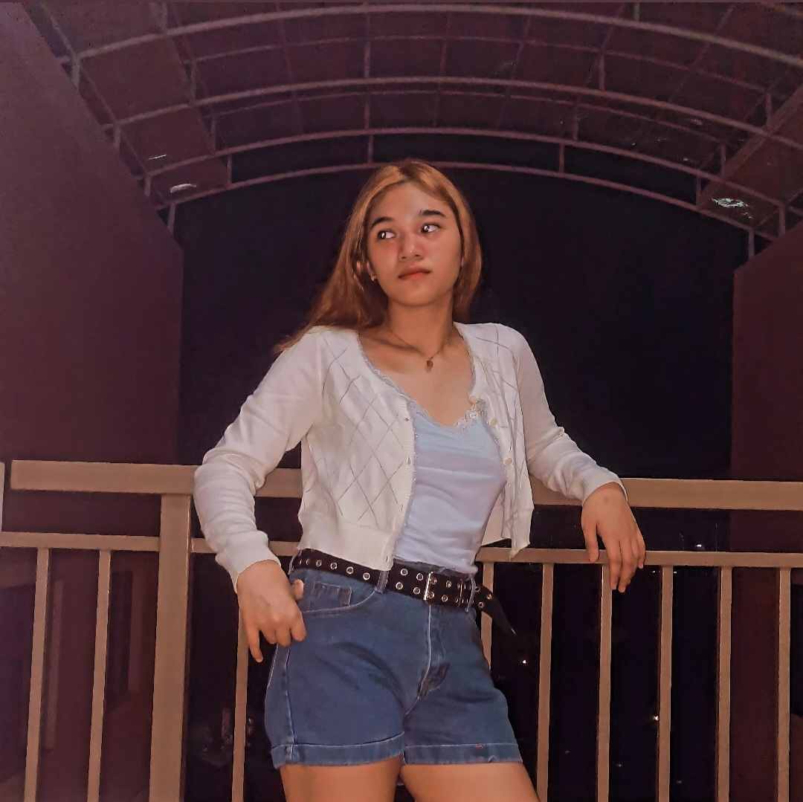
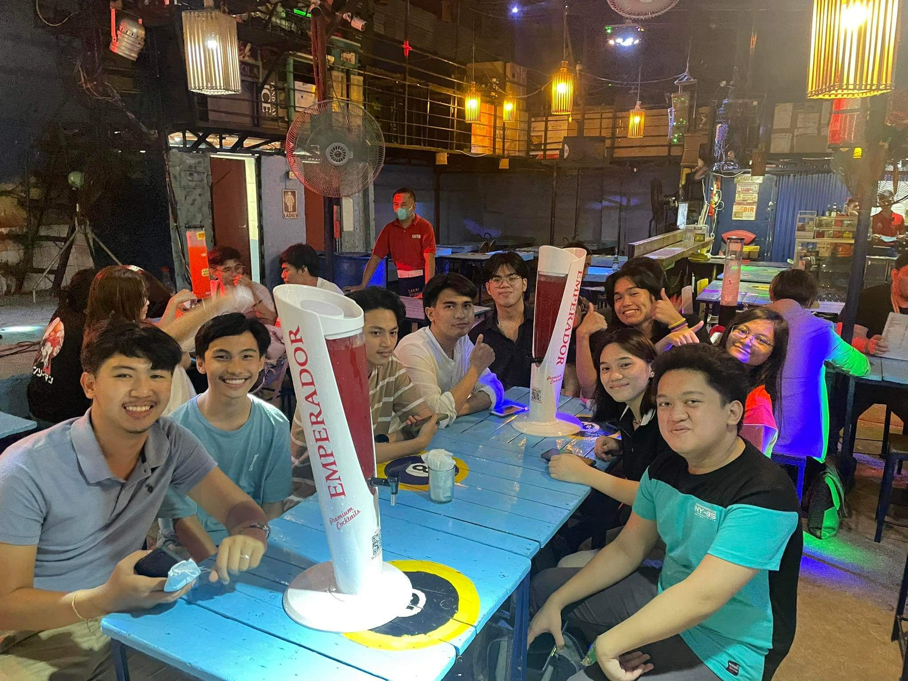
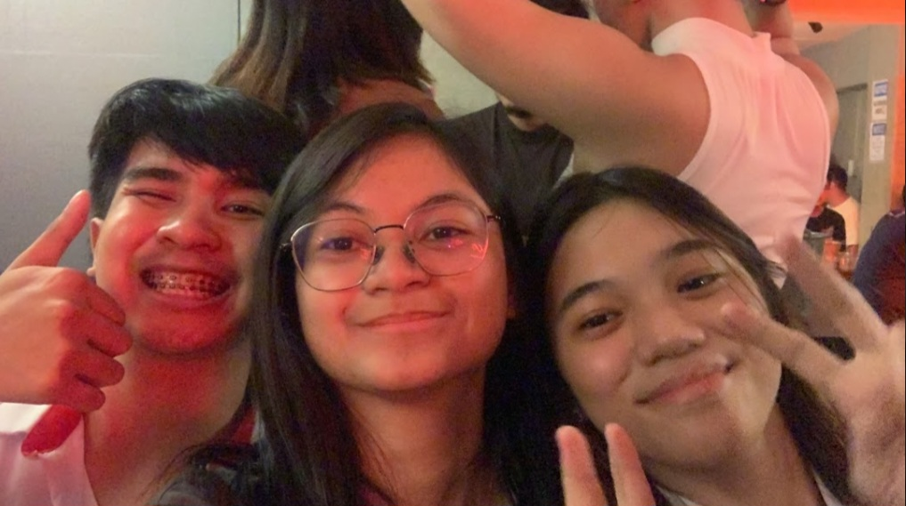
Go to Top